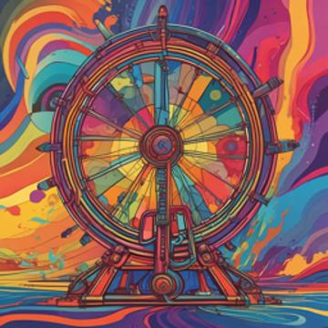

Create a Cover from any sound!
Create a Cover from any sound!
Reimagine the melodies you love. Open the song menu and click Cover Song
Reimagine the melodies you love. Right Click > Create > Cover Song
Make a song about anything
(You'll need to sign up for a free account)
Global Trending
Global
Now
Suno Covers


Top Categories
Trending Playlists
Playlists For You

3:21